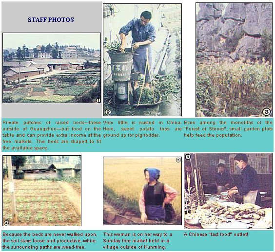
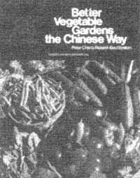

An ancient Oriental growing method-that has a lot in common with some of the Western world's "advanced" techniques-can give you a better harvest than row gardening... with less labor.
Feeding China's one billion people isn't an easy task ... and feeding them well (as participants on MOTHER's tour to that country last fall discovered is generally the case) seems little short of a miracle! And even though the nation's current administration deserves much of the credit for this feat, the farming techniques that have enabled land-which has been tilled for thousands of years-to remain productive are, themselves, just short of incredible.
Eighty percent of China's people, using methods developed over centuries, are now involved in the most intensive and efficient agricultural system in the world ... and many of the vegetables that these farm workers-and their city cousins, too-consume come from private family plots of raised vegetable beds that are smaller than the space needed to house a Western farmer's tools!
With the exception of areas containing such "water crops" as rice and lotus (which require sunken beds), this intensive gardening technique is used on almost every spare inch of land. Entire fields of raised beds stretch to the horizon, and there are tiny strips of cultivated earth beside factory walls, city dwellings, and highway right-of-ways. Some small gardens are even tucked in among the rock monoliths of Kunming's "Stone Forest" national monument ... and such "postcard-size" plots play a large part in putting good fresh vegetables on family tables, and often produce enough surplus to earn the gardeners extra income at "free markets".
If you think that Chinese intensive gardening-which is designed to get the most benefit out of air, soil, and water with the least amount of work-sounds like an ideal method to use for backyard growing ... you're right! Once created, raised beds are permanent. They never become waterlogged, never have to be plowed, will "warm up" earlier than soil tilled in the usual manner and thus allow you to get a head start on spring planting and-when one vegetable is harvested-can be worked and replanted without disturbing the surrounding crops.
Additionally, because you walk on the paths between the beds and never on the planting area itself, the earth doesn't get packed down ... roots won't be damaged and can grow easily ... and the beds will stay aerated (which will help nitrogen-fixing bacteria create nutrients from air in the soil).
Raised-bed gardeners never have to worry about accidentally sitting on the plants behind them as they weed or harvest, and-because such folks will have to fertilize and water only the beds themselves, rather than the whole garden area-they'll use less of both of these essential ingredients and eliminate much of the mud that can follow garden chores into the house. As an added bonus, a raised-bed garden can be kept looking wonderfully neat and beautiful with a minimum of effort
A person could almost make a museum out of all the wonderful hand tools that the Chinese have developed to make cultivation easier, but-to prepare your own Oriental raised beds-you'll actually need only a shovel, a sharp spade, and a rake. (You might want to add a trowel and a bulb planter to ease the tasks of weeding and transplanting seedlings.)
When laying out a bed, remember to keep it narrow enough so that its center can be reached without your having to step on the bed itself. In China, raised beds are-at the most-four to five feet wide and usually rectangular. However, we also saw them formed into squares, triangles, cres cents, or whatever shape best suited the available space.
Peter Chan (a man who is among the strongest proponents of this method ... see the accompanying sidebar) builds beds that are four feet wide at the bottom and three feet wide at the top, with a side slope of six inches. Each bed is then surrounded by paths at least a foot wide.
Once you've completed your garden layout on paper (plan well, as the whole idea is to make permanent plots and thus reduce your future work), measure and mark out the first rectangle by attaching twine to four corner stakes. Then, working from the center and using the string as a guide to keep the sides of the bed straight, turn the soil one shovel deep (as opposed to the "one shovel and one fork deep" preparation necessary for biodynamic/French intensive gardening), removing weed roots and rocks as you go along. (If you turn up a lot of stones, save them to pave your garden paths.)
As you turn the earth, work in compost, manure, sand, lime, or whatever soil tests indicate that the earth needs. And be sure to dig a small, narrow trench between the base of the bed and the paths, to catch water runoff and send washed-away nutrients back into the bed rather than onto the area where you'll walk. Finally, smooth and shape the top and sides of the plot with a rake ... remove the twine ... and move on to the next bed.
It's best to leave the corner stakes in-as Peter Chary has suggested-because they'll help prevent your hose from dragging across young plants as you water. Don't, however, be tempted to shore up the sides of your beds with rocks or railroad ties, as such supports would provide fine homes for slugs and snails.
Remember, too, not to crowd your vegetables when you plant. In a bed that's three feet wide at the top, for example, make only one row-down the center-of such spreading crops as cucumbers, zucchini, and squash ... two rows of cabbage, broccoli, tomatoes, peppers, eggplant, peas, beans, and corn (you can stagger these plants to give them even more room)... or four rows of garlic, leeks, and scallions.
Another bit of simple "technology" has to do with watering: In China, farmers always take care of this chore in the morning, rather than in the evening, because they feel that the cold "bath" at that time helps to stun and sicken aphids, small worms, and other pests that like to dine during the cooler part of the day. Although extremely hot, dry weather sometimes makes it necessary to give the crops another drink in the late afternoon, the Chinese point out that plants are not performing photosynthesis at night and thus don't need water. Besides, evening moisture evaporates more slowly, and the "standing" humidity attracts many insects, and encourages the development of destructive fungi and mildew. Tomato blight, for instance, often occurs when the soil is too damp.
Fortunately, with the good drainage provided by raised beds, your vegetables won't have to contend with "wet feet", and-even after a heavy rain-you'll find that the earth begins to dry and becomes ready-to-work much sooner than would that in a regular row garden ... while moisture is actually held longer beneath the soil, stimulating root development.
To further discourage insects and pathogens, never put the same crop in the same bed for two seasons in a row. As a matter of fact, don't even replant a vegetable twice in the same spot during a single gardening year, if you can avoid it.
The extra crops that your raised beds ought to produce may not feed a billion ... but you'll obtain more vegetables, from a much smaller space, with much less effort, than would be possible using traditional row-gardening methods!
Although the accompanying article provides an overview of the philosophy and methods of Chinese raised-bed gardening, it doesn't go into all of the intricacies of the Oriental intensive horticultural technique. However, if your interest has been aroused, there is a source of more information available.
Better Vegetable Gardens the Chinese Way by Peter Chan with Spencer Gill (available in some bookstores or libraries or, for $4.95 plus 95 cents shipping and handling, from Mother's Bookshelf, P.O. Box 70, Hendersonville, North Carolina 28791) not only offers a detailed presentation of the methods used by one of the foremost proponents of the Oriental method, but also features color photographs that actually manage to convey the author's love for gardening. Folks who have a yen to try this form of horticulture will find the help they need in Peter Chan's attractive volume.
|
 |
 |
|